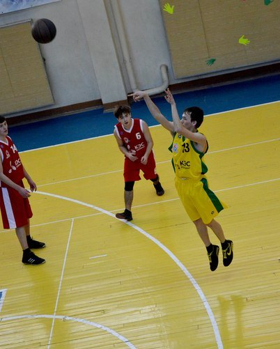

Одним из моих главным увлечений является баскетбол. Я занимаюсь им с 8 класса, в данное время играю за команду факультета.
Также меня интересует музыка, точнее ее прослушивание. Любимым жанром является рок, даже есть любимые группы: Thousand Foot Krutch, Papa Roach, ...
Thousand Foot Krutch - The Art Of Breaking
Papa Roach - Be Free